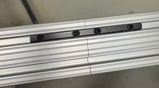
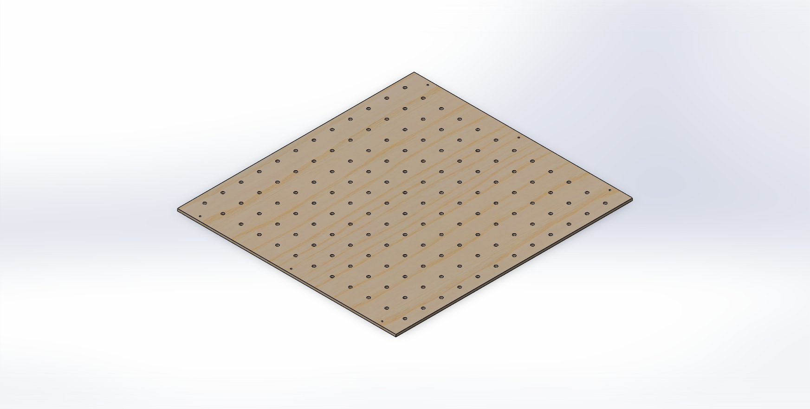
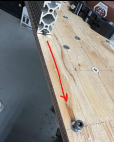
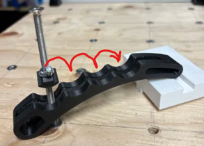
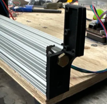
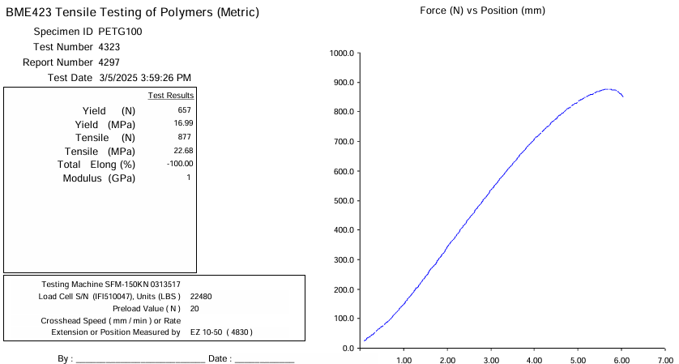
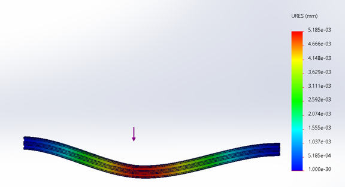
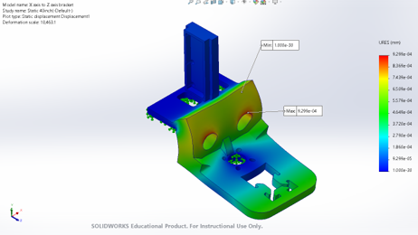
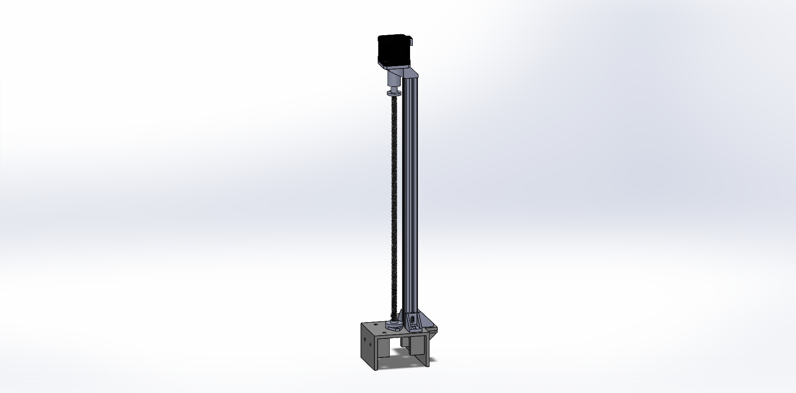

Modular Foam-Cutting CNC Machine
Designed, analyzed, manufactured, and tested a modular CNC machine intended to reduce the cost and lead time associated with outsourcing foam molds for student engineering teams. The system combines mechanical design, structural analysis, additive manufacturing, electronics, motion control, CAM, G-code, and physical prototyping into a scalable manufacturing platform.

Bringing Foam-Mold Manufacturing In-House
Student design teams at Toronto Metropolitan University, including Toronto Metropolitan Formula Racing and Toronto Metropolitan Engineering Concrete Toboggan, rely on custom-machined foam molds for components such as aerodynamic composite molds and concrete toboggan ski molds. Outsourcing these parts increases both project cost and manufacturing lead time. Comparable hobbyist CNC systems capable of satisfying similar requirements can also cost roughly $1,000 to $3,000 or more.
Project Goal
Develop a low-cost CNC foam-cutting platform that allows student teams to manufacture foam molds internally while remaining practical for a shared engineering workspace.
Primary Design Requirements
From Requirements to a Physical Prototype
The development process began with research into existing CNC systems and common failure modes. Design concepts were then generated for each major machine function and evaluated against the project's cost, modularity, maintainability, dimensional, and compatibility requirements.
Define Requirements
Established machine size, budget, modularity, maintainability, and foam machining requirements.
Research Existing Systems
Evaluated commercial and DIY CNC designs, motion systems, structures, electronics, workholding, and software.
Generate Concepts
Used a morphological chart to compare possible solutions for each CNC function.
Select Components
Selected components based on cost, compatibility, performance, modularity, and ease of maintenance.
Analyze & Model
Performed structural, motor, vibration, thermal, and material calculations before finalizing the CAD assembly.
Manufacture & Test
Fabricated the prototype and tested mechanical motion, electronics, firmware, and G-code execution.
Hover over the chart and scroll to view the complete design matrix
Morphological chart used during concept generation to compare alternative solutions for the CNC machine's frame structure, linear guides, motors, motor drivers, spindle, software, cooling, workholding, vibration mitigation, controller, power supply, drive system, and modularity.
Component Selection
The final architecture combined readily available CNC and 3D-printer hardware with custom-manufactured components. The component choices were made to balance mechanical performance with the project's stronger priorities of affordability, expandability, repairability, and ease of integration.
Aluminum T-Slot Rails
Lightweight aluminum extrusion provided a modular, readily available structural system that could be expanded without completely rebuilding the machine.
NEMA 17 Stepper Motors
Selected for precise step-based motion, availability, familiarity, and compatibility with the CNC electronics.
A4988
Selected as the final motor driver because it met voltage requirements and proved easier to configure and adjust during prototyping.
Arduino Mega + RAMPS 1.4
The Arduino Mega provided sufficient I/O and memory while the RAMPS board created a compact interface for motors, drivers, and limit switches.
Proxxon Micromot 60/E
A 12 V variable-speed rotary tool capable of using different cutting bits for varying foam geometries and machining requirements.
GRBL
Open-source CNC firmware provided an accessible and well-supported interface for interpreting G-code and controlling machine motion.
12 V DC Supply
Selected to satisfy the requirements of the motors, controller hardware, and Proxxon rotary tool.
Fan + Heat Sinks
Motor-driver cooling combined heat sinks with forced-air cooling using a Noctua fan.
Adjustable 3D-Printed Clamps
Custom clamps could be repositioned around the base and adjusted to multiple angles for different workpiece geometries.
A CNC Designed to Change Size
Modularity was one of the primary design requirements. Rather than designing the CNC around a single fixed footprint, the mechanical structure, workholding, limit switches, base, and cable-management system were developed so the machine could adapt to different workspace and machining requirements.
Expandable T-Slot Rails
The X and Y axes were designed to operate at approximately 2 ft in the compact configuration and expand to roughly 3.5 ft when a larger machining area was required. Two-foot and 1.5-foot aluminum T-slot sections are connected using straight brackets, allowing the machine envelope to increase without replacing the entire structural frame.

cnc-expandable-rails.png
Modular Wooden Base
The work surface was divided into multiple 2 ft × 2 ft wooden sections rather than using one permanently oversized base. Additional sections can be added when the machine is expanded, allowing the physical work area to grow with the rail system while keeping the compact configuration easier to store and transport.

cnc-modular-base.png
Rail and Base Alignment
Expanding the machine required a method of maintaining alignment between the structural rails and removable base sections. M5 guide bolts were incorporated along the base to provide repeatable reference locations and help position the T-slot rails correctly when the CNC was assembled in different configurations.

cnc-rail-alignment.png
Adjustable 3D-Printed Clamps
Custom workholding clamps were designed so they could be repositioned around the modular base instead of being permanently fixed to one location. The clamp geometry also provides angular adjustment, allowing different foam sizes and geometries to be secured while maintaining the flexibility required from the expandable machine.

cnc-adjustable-clamp.png
Repositionable Limit Switches
A fixed limit-switch position would only work for one machine size. The limit-switch mounts were therefore designed so they could be repositioned at the ends of the rails whenever the machine was expanded or contracted. This allowed homing and travel-limit functionality to remain compatible with multiple CNC configurations.

cnc-limit-switch.png
Expandable Cable Management
Mechanical expansion also required the electrical system to accommodate the machine's maximum travel. Drag chains and wire routing were therefore planned around the expanded configuration, ensuring that increasing the machine size would not require the motors, limit switches, and controller wiring to be completely replaced.
Engineering the 3D-Printed Components
Additive manufacturing allowed custom bearing housings, motor mounts, clamps, limit-switch mounts, brackets, and tool mounts to be manufactured quickly and at relatively low cost. Tensile testing was performed on PETG and carbon-fibre-reinforced PAHT-CF to obtain mechanical-property data that could support material selection and SolidWorks simulation.
General-Purpose Printed Components
PETG was selected for printed components that required durability and ease of manufacturing but were not subjected to the highest structural loads. These components included limit-switch mounts, Proxxon tool mounts, L-brackets, and adjustable workholding clamps. Tensile testing provided experimental material data that could be used to better represent the printed material during design and simulation.

cnc-petg-tensile-test.png
Structural Printed Components
Carbon-fibre-reinforced PAHT-CF was selected for more highly loaded printed components such as motor and bearing housings. Three tensile specimens were tested to characterize the material across multiple samples rather than relying on a single test result. The resulting strength data supported the use of PAHT-CF for structural printed components within the CNC assembly.
Matching Material to Component Loading
The tensile testing supported a two-material approach for the 3D-printed components. PETG was retained for lower-loaded brackets, mounts, and workholding components, while PAHT-CF was selected for components where greater structural performance was required.
Validating the Design Before and During the Build
Mechanical calculations and simulation were used to determine whether the lightweight and modular architecture could still provide sufficient rigidity and motion capability. The analysis included rail deflection, FEA, motor torque, vibration, cutting force, motor-driver thermal behavior, and material testing.
Rail Deflection Analysis
The expandable rail configuration was evaluated using both hand calculations and SolidWorks finite element analysis. At maximum expansion, hand calculations predicted approximately 0.0070 mm of deflection at the rail connection. SolidWorks FEA produced a similar result of approximately 0.0052 mm under the 7.15 N tool-head load, providing additional confidence that the aluminum T-slot structure provided sufficient rigidity for foam machining.

cnc-rail-fea.png
Structural Component FEA
Structural components were also evaluated in SolidWorks Simulation to identify areas of increased stress and deformation before the parts were manufactured. These simulations helped verify that the selected geometry and materials were appropriate for the expected CNC loading conditions while maintaining the project's lightweight and low-cost design goals.

cnc-structural-fea.png
Motor & Lead-Screw Selection
Motor sizing was performed using a conservative 6 kg estimate for the vertical assembly and the TR8×8 lead-screw drive system. The calculated torque requirement was approximately 0.331 N·m per motor. The selected NEMA 17 stepper motors provided approximately 0.45 N·m of holding torque, exceeding the calculated requirement and providing sufficient torque for the intended vertical motion.

cnc-motor-drive.png
Vibration Analysis
Vibration analysis was performed to evaluate the dynamic response of the CNC structure during machining. The estimated natural frequency of the frame was approximately 50.3 Hz, while the predicted vibration amplitude under the analyzed cutting conditions was approximately 0.1908 µm. The analysis indicated that the primary operating conditions were sufficiently separated from the identified resonance region. The report recommended avoiding operation too close to the minimum spindle speed and increasing the minimum operating speed to approximately 6,000 RPM.
Arduino-Based Motion Control
The controller architecture was built around an Arduino Mega and RAMPS 1.4 board. A4988 stepper drivers controlled the NEMA 17 motors while limit switches provided machine endpoint detection. A 12 V DC supply powered the system, and thermal analysis was performed to investigate motor-driver cooling requirements.
A4988 Driver
Calculated power dissipation was approximately 3.168 W under the assumptions used in the report.
Heat Sinks
Heat sinks were added to the motor drivers to reduce their expected operating temperatures.
Forced-Air Cooling
A Noctua fan already available to the project was selected to provide airflow across the controller electronics.
From CAD Model to Physical Motion
The CNC follows a conventional digital manufacturing workflow. A CAD model is converted into a machining toolpath, exported as G-code, transferred through a G-code sender, and interpreted by GRBL firmware to command the motors.
CAD
Create the desired geometry in SolidWorks.
CAM
Generate machining toolpaths using software such as Fusion 360.
G-code
Export machine-readable movement and cutting commands.
UGS
Universal G-code Sender transfers commands to the controller.
GRBL
Firmware interprets commands and controls X, Y, and Z motion.
Meeting the Budget Constraint
Cost was a major design driver because the intended users were student engineering teams with limited funding. The machine therefore relied heavily on standardized hardware, aluminum extrusions, 3D-printed components, open-source software, and donated or already-available components.
Prototype Manufacturing Cost
The completed prototype remained below the project's $700 design budget while incorporating the required mechanical, electronic, motion-control, workholding, and safety-related components.
Making the Mechanical, Electrical, and Software Systems Work Together
Following approximately one month of fabrication and integration, the completed prototype was used to validate the mechanical motion system, controller electronics, motors, limit switches, firmware, and G-code workflow. Motor movement was successfully commanded using G-code through GRBL, confirming that the main architecture operated as intended.
Challenges Encountered
Integration required troubleshooting of software synchronization, mechanical alignment, component fitment, wiring, calibration, and motion behavior.
Validation
Testing and iterative adjustment demonstrated a functional CNC platform that satisfied the project's central goals of affordability, modularity, automated movement, and foam-cutting capability.
What I Would Improve Next
The prototype demonstrated the feasibility of the modular CNC concept, but the report also identified several areas that would benefit from continued development and additional testing.
Improve Precision
Additional time for calibration, mechanical alignment, and controller tuning would improve machining precision and repeatability.
Improve Expansion Mechanism
A folding or snap-in expandable base could make changing the machine footprint faster and more ergonomic than manually fastening each section.
Broaden Material Capability
Interchangeable tool heads and additional speed-control options could expand the system beyond foam machining.
Optimize Materials & Cost
Further investigation into lighter, lower-cost materials and additional sponsorship opportunities could reduce system cost and weight.
Improve Sustainability
Future iterations could investigate reduced energy consumption and more environmentally responsible material selections.
Improve Documentation
Expanded user documentation, troubleshooting guides, tutorials, and customization instructions would make the machine easier for future teams to maintain and modify.